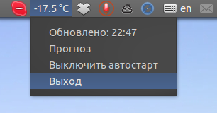

Omsk Weather

Данные о температуре воздуха в г.Омск (Россия) для системного трея Ubuntu. Обновляется раз в 15 минут.
Показания берутся с сервера «ОТП Банка», (старая ссылка «муха» myxa.opsb.ru) который, в совою очередь, получает их с датчика расположенного на здании этого банка в центре города (за кинотеатром «Маяковский»).
На сайте также доступен архив данных. На сайте температура обновляется ежеминутно.
Для работы требуется запустить ./main.py.